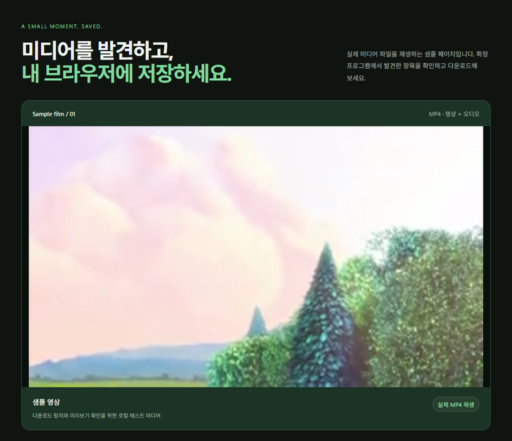
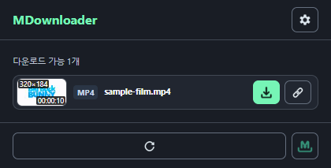
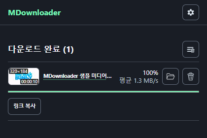

페이지에서 바로 발견
현재 페이지에서 발견한 영상과 오디오를 목록으로 확인하세요. 지원되는 항목은 미리보기로 살펴볼 수 있습니다.
Media downloader · Chrome & Edge
웹페이지의 영상과 오디오부터
지원되는 HLS·DASH 스트림까지.
찾고, 확인하고, 저장하는 일을 한곳에서.
스토어 출시 준비 중 · 로컬 미리보기
A quieter way to download



Chrome에서 MDownloader 0.2.18을 실행한 실제 캡처입니다. 샘플 MP4 탐지와 다운로드 완료를 각각 촬영했습니다.
Small tool, less friction
찾는 순간부터 저장이 끝날 때까지.
현재 페이지에서 발견한 영상과 오디오를 목록으로 확인하세요. 지원되는 항목은 미리보기로 살펴볼 수 있습니다.
지원되는 비암호화 HLS·DASH 스트림을 MP4로 저장합니다. HLS는 Shift 키와 다운로드 버튼으로 화질을 선택할 수 있습니다.
사이드 패널에서 여러 다운로드의 진행률과 속도, 완료 상태를 확인하세요. 지원되는 라이브 HLS도 수집한 시점까지 저장합니다.
Getting started
별도 데스크톱 프로그램은 필요하지 않습니다.
Chrome 웹 스토어 또는 Microsoft Edge 추가 기능에서 설치합니다.
저장할 미디어가 있는 페이지를 열고, 필요하면 사이트 접근 권한을 허용합니다.
MDownloader에서 항목을 선택하고 다운로드합니다. 사이드 패널에서 상태를 확인할 수 있습니다.
Good to know
사이트의 제공 방식과 로그인 상태, 접근 권한에 따라 달라집니다. DRM 또는 암호화로 보호된 콘텐츠와 지원 범위를 벗어난 스트림은 다운로드할 수 없습니다.
MP4·WebM 등의 영상과 MP3·M4A 등의 오디오 직접 링크, 지원되는 비암호화 HLS·DASH 스트림을 처리합니다. 코덱과 스트림 구조에 따라 저장 가능 여부가 달라집니다.
미디어 요청을 발견하고 다운로드하려면 해당 사이트와 미디어 서버에 접근할 권한이 필요할 수 있습니다. 접근 범위는 브라우저의 확장 프로그램 설정에서 관리할 수 있습니다.
아니요. 후원은 선택 사항이며 후원 여부에 따른 기능 차이는 없습니다. 개발을 응원하고 싶을 때 자유롭게 참여해 주세요.
본인이 소유하거나 다운로드 권한을 가진 콘텐츠에 사용해 주세요.